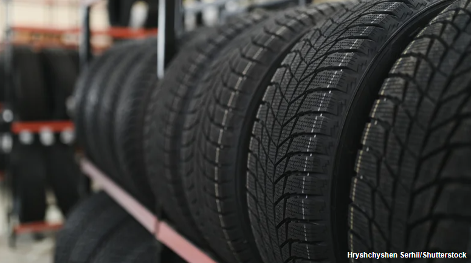

Canada’s Conservative leader echoes Reagan as his party regroups
CALGARY, Alberta — Canada’s Conservative leader channeled a legendary American
president as he secured his hold on the party grassroots — and and debuted his new message to voters for a
federal election that could come as early as spring.
Pierre Poilievre is rebuilding after last year’s election defeat, losing to Mark Carney, a rookie Liberal
politician who leapfrogged and stunned the once-favored Conservatives.
Before the Liberal comeback, the Conservatives seemed set to ride a wave of anti-incumbent sentiment
sweeping much of the Western world.
A year out from a bruising loss to Mark Carney, the opposition leader is
betting the next election on a simple test: are voters better off?

This Tire Brand Scores The Worst For Owner Satisfaction In Consumer Reports' Ranking
As the only part of the car that's actually supposed to make contact with the
road, tires are crucial for keeping your car safe and performing well. But, like anything else in the world
of cars, they're not all built equal. That fact is evident when seeing how certain manufacturers failed to
perform to standard in a recent Consumer Reports (CR) study on tire brand satisfaction.
The study considered all-season, all-terrain, winter/snow, and summer tires. Of the brands surveyed,
Sumitomo ended up with the lowest overall satisfaction levels, finishing at the bottom of the table in two
of the four tire categories (all-terrain and summer). It also languished as second-to-last in the all-season
and winter/snow categories.
Sumitomo tires performed more poorly than others in key priority areas for consumers, such as handling
capabilities, grip on wet roads, and longevity. Their tires were found to wear more quickly on
average, compromising a car's ability to grip the road effectively. All four Sumitomo tires rated by CR –
namely the HTR A/S P03 (all-season tire), HTR Z5 (summer tire), Ice Edge (winter), and Encounter HT2
(all-season SUV tires) — scored poorly across the board, receiving some of the lowest ratings possible for
owner satisfaction.
There are more named brands among the worst performers in Consumer Reports'
recent owner satisfaction survey